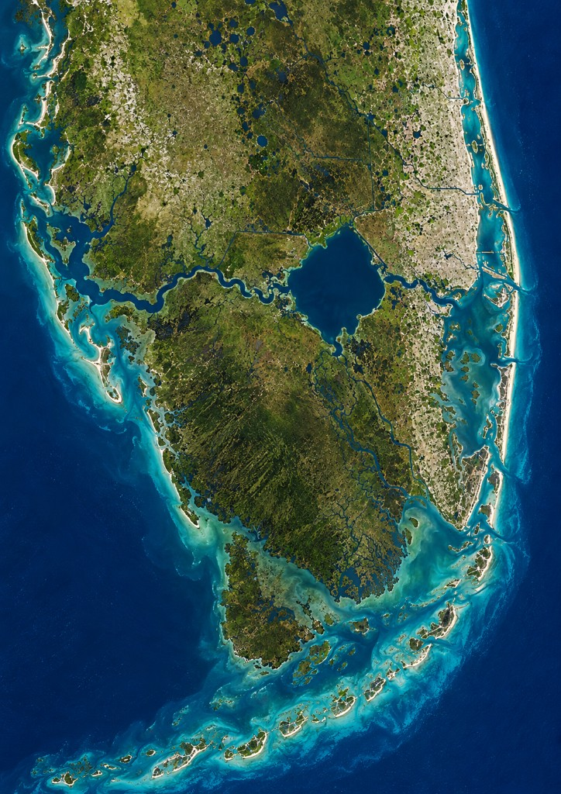

A flat peninsula with one great lake. Canals run from Lake Okeechobee to the Gulf and the Atlantic. The Keys sit apart in the south.

The Mayaimi named the big water Mayaimi — “big water” — long before charts called it Okeechobee. Calusa canoe roads cut west to the Gulf. Tequesta kept the Biscayne shore. Jaega and Ais held the Atlantic strand. When the Spanish asked for gold they were shown fish, shells, and a lake that would not end. Pirates later ran the same cuts the tribes already knew: lake to gulf, lake to sea, then south along the Keys where Matecumbe wreckers lit false fires.
The land is plains — no mountains to hide in. Hold the lake and you can sail both coasts. Miami’s inlet is a door into the bay. The Keys are separate islands; do not count on a land bridge. Ports on opposite coasts can still meet if you own the canals.
See also: Old World Miami · Port · play Marauder's Sea free